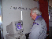
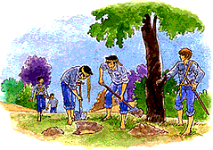

Organización Mundial del Movimiento Scout
-
Palabras Perdidas
-
Situacíones de Paz
-
El periódico de la Paz
-
Reportero de la Paz
-
Los Caminos de la Paz
- Leyendas de Paz
-
Manifiesto 2000
Difusión libre de la información
|  | El Secretario General firma el Manifiesto 2000 | |
| Foro de alternativas juveniles | ||
 |
La autopista del Valle Verde | |
|  | Piratas del Caribe |